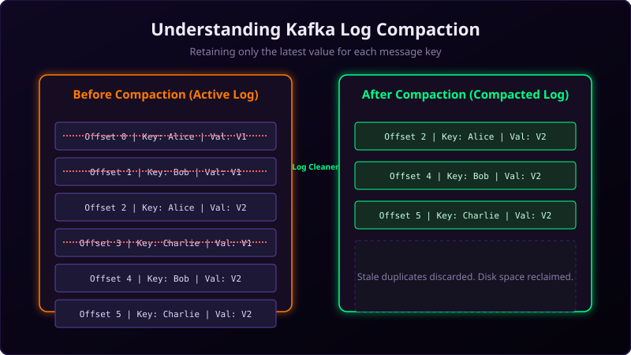

By default, Apache Kafka deletes old messages after a configured time (e.g., 7 days) or when the topic reaches a certain size limit (e.g., 10GB). This is called the delete retention policy.
However, what if you are using Kafka to store data that represents the state of a system—like a user's profile information or account balances? You can't just delete this data after a week. To store state records efficiently without running out of disk space, Kafka provides Log Compaction.

Imagine a directory board in an apartment building lobby:
When a tenant moves or updates their phone number, the building supervisor doesn't add a new line to a growing list of hundreds of historical addresses. Instead, they find the tenant's name on the board, wipe off the old address, and write the new one in its place.
You only need to know where the tenant lives right now. Keeping a history of all their 10 old houses is a waste of board space. This board maintenance is log compaction.
How Log Compaction Works
When log compaction is enabled on a topic (using cleanup.policy=compact), Kafka retains at least the latest value for each message key inside the topic partitions.
A background thread on the broker called the Log Cleaner runs continuously. It scans inactive log segments. If it finds multiple messages sharing the same key, it keeps the message with the highest offset and deletes the older versions, reclaiming disk space.
Deleting Keys: Tombstone Records
If log compaction keeps the latest value for every key forever, how do you delete a key from the topic?
To delete a key, a producer publishes a message with that key and a null payload. This null-valued record is called a Tombstone. When the Log Cleaner runs, it recognizes the tombstone, deletes all older records for that key, and eventually clears the tombstone itself after a configured window (delete.retention.ms, default 24 hours).
Use Cases for Compaction
- Database Change Data Capture (CDC): Mirroring table state changes to a Kafka topic.
- KTables in Kafka Streams: Materialized views that look up states dynamically.
- System Configuration: Retaining the active settings for services indefinitely.
Enabling Log Compaction in Java
You can enable log compaction programmatically when creating or altering a topic:
import org.apache.kafka.clients.admin.*;
import java.util.*;
Properties props = new Properties();
props.put("bootstrap.servers", "localhost:9092");
try (AdminClient adminClient = AdminClient.create(props)) {
Map<String, String> topicConfigs = new HashMap<>();
// Enable compaction cleanup policy
topicConfigs.put("cleanup.policy", "compact");
NewTopic compactedTopic = new NewTopic("user-profiles", 3, (short) 2)
.configs(topicConfigs);
adminClient.createTopics(Collections.singletonList(compactedTopic)).all().get();
System.out.println("Compacted topic created successfully!");
} catch (Exception e) {
e.printStackTrace();
}Conclusion
Log compaction allows Apache Kafka to act as a durable, long-term storage ledger. By wiping out duplicate keys and retaining only the latest updates, it prevents disk exhaustion and ensures that downstream systems can reconstruct application state quickly.